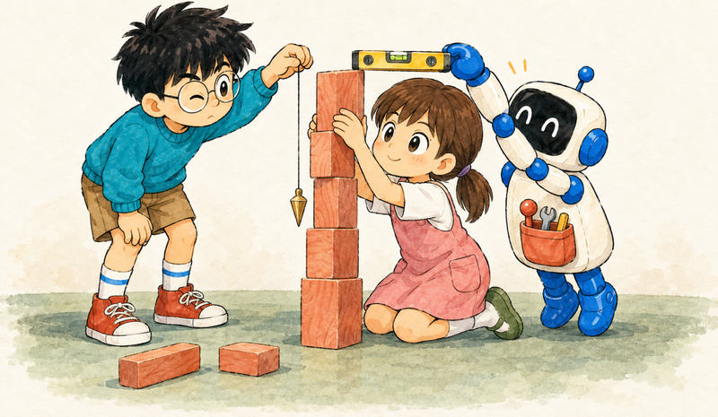
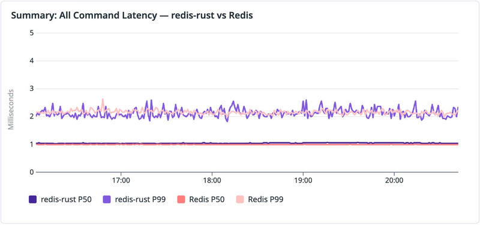
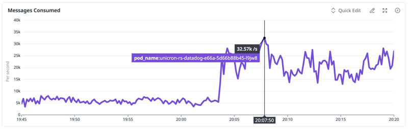

Feature 01 · ARTICLE · 2026 03
Closing the Verification Loop
AI agents now write software faster than any team can verify it, so the bottleneck has moved from writing code to trusting it. Our answer at Datadog is harness-first engineering: instead of reading every line an agent writes, we invest in automated checks that tell us, in seconds and with high confidence, whether the code is correct. We built two systems this way. redis-rust reached production-like staging with comparable latency and an 87% memory reduction. Helix, a Kafka-compatible streaming engine, sustained millions of deterministic simulation runs and reached about 93% of peak disk throughput. In both, the harness replaced code review as the primary source of correctness, though a human still designed it. Then we removed the human: on Unicron, our time-series aggregation service, an LLM evolves code that is formally verified, shadow-tested on real traffic, and hot-swapped into production in minutes, with gains of 270% and 541% on two workloads.

Why trust needs a harness
Early programmers distrusted compilers, often rightly. Compilers earned trust because their languages have precise semantics. Agents take unrestricted natural language, sometimes from untrusted sources, and turn it into running code, so trust is harder to earn. Automation has consistently won only when paired with verification.
Our methods vary in rigor: deterministic simulation testing, formal specifications, shadow evaluation, observability-driven feedback. The principle is constant. The agent generates code, the harness verifies it, production telemetry validates it, and failures update the harness. A weak harness cannot be compensated for by better models or more human review.
redis-rust: learning by failing

One agent, Claude Code with Opus 4.5, produced a working Redis-compatible server within a few hours. It compiled and passed tests, but many details were subtly wrong: error messages drifted from Redis, and abstractions were over-engineered.
We added verification one layer at a time, each prompted by what slipped through the layer below: a HashMap shadow oracle, then deterministic simulation testing (DST) with fault injection, then TLA+ specs for replication and gossip, Kani proofs for CRDT merges, Maelstrom with the Knossos linearizability checker, and the official Redis Tcl suite.
Finally we ran it as a shadow cluster against Redis 8.4 on real traffic. Latency was initially comparable, but memory use was 8x higher, partly from 4 MB of buffers preallocated for a micro-benchmark. Using metrics as feedback, the agent proposed and implemented three optimizations within minutes, cutting the footprint by 87%.
Helix: contracts before code
For Helix we used several agents, mainly Claude Code and Codex, and worked constraint-first. We stated the core invariants up front and let the agent design each subsystem, but it was not allowed to invent system meaning: what is durable versus acknowledged, committed versus visible, what happens on a crash at each boundary.
Each verification layer trades speed for rigor:
| Layer | Tool | Time | Confidence |
|---|---|---|---|
| Symbolic | TLA+ specs | 2 min read | Understanding |
| Primary | DST | ~5 s | High |
| Exhaustive | Stateright | 30–60 s | Proof |
| Bounded | Kani | ~60 s | Proof (bounded) |
| Empirical | Telemetry + benchmarks | seconds–minutes | Ground truth |
We generate TLA+ specs from architecture decision records, and the invariants flow from them into every other layer. The lightest mechanism that can falsify a hypothesis runs first. The mental overhead is roughly 2–3x the effort of writing the code, and it pays back immediately: each agent iteration becomes a pass/fail decision instead of a judgment call.
DST is the workhorse. One run takes about 5 seconds and drives real production code through randomized faults at the network, disk, and node level. Deterministic seeds make every failure reproducible. DST caught, for example, a write-ahead log bug where in-memory truncation ran before the on-disk sync; an injected disk fault then caused data loss. The fix was copy-on-write. Unit tests do not find such bugs, and code review might, on a good day.
We reached 500 seeds per component, then 10 million across all components, then system-level Kafka invariants: every acknowledged message is consumable, offsets increase monotonically, leadership changes lose no writes.
With correctness locked in, performance became hill-climbing: the agent proposes a change, DST runs, passing changes are measured and kept, failing ones reverted. In redis-rust, one CPU optimization from profiling data broke the linearizability test. In Helix, the agent moved from zero-copy handlers to Raft pipelining and a buffered WAL; the shift to an actor-based design was a human decision. A day later Helix was at about 93% of peak disk throughput, still passing DST.
In staging, Helix served our APM profiling stream, about 10,000 messages per second, from one three-node cluster. Produce latency averaged 22.2 ms, against 116 ms for the baseline Kafka cluster.
The human defined the system and its invariants, strengthened the harness, set targets, and approved architecture. The agent did everything else.
The inversion
Before agents, code review was the most scalable verification method and formal methods the least. Agents invert this: they can write TLA+ specs, DST harnesses, and Kani proofs inside their own loop. Reviews are not obsolete, but the expertise moves from checking the output to designing the checks. Every invariant catches a whole class of bugs in all future iterations, not only the diff at hand. Even our larger experiments, some reaching 300,000 lines, kept a human in the loop.
What if the harness itself is wrong? Incomplete invariants produce automated confidence in incorrect behavior. Observability closes that loop: production telemetry exposes mismatches between the model and reality and refines the harness. We are still early, but the direction feels right. Invest in the harness in proportion to the cost of failure.
Unicron: the human steps out

Unicron maintains materialized views over hundreds of billions of time series. Its aggregation loop runs on every message for every configured query, and workloads shift daily, so the best code today is not the best code tomorrow. The function has a clear correctness oracle: does the evolved version match the baseline? That made full autonomy worth trying.
An evolution server runs beside the aggregation server and produces WASM modules through five stages, each a verification boundary:
Specialization: the organization ID and aggregation config become compile-time constants.
LLM evolution: evolutionary search over candidates, one Git commit per generation. Target files must stay under about 16 KB; above that, generated code often breaks. In one early run all 30 attempts failed to compile.
Formal verification: Verus proves safety properties of the codec libraries the evolved code calls, such as no varint overflow and valid memory access.
Shadow evaluation: candidates run on held-back production messages; an output hash that differs from the baseline means rejection, whatever the benchmark says.
Live hot-swap: verified modules replace the old ones without restarts. WASM isolates them, and Ed25519 signatures confirm authenticity.
On a deliberately scaled-down Unicron, one workload (100 queries, SUM over 30-second intervals) went from 7,106 to 26,263 messages per second after three generations with Claude Opus 4.6: 270%. Specialization contributed 44.5% and evolution 155%, multiplicatively. Specialization was consistently the largest single contributor. The evolution’s key change replaced an O(N) scan of filters with an O(1) HashMap lookup, a structural change that PGO or JIT compilation would not easily produce. A second workload reached 541%.
Full autonomy works here because the function is constrained enough that every property we care about is machine-checkable. As scope grows, so does the cost of being wrong, and the harness must grow with it.